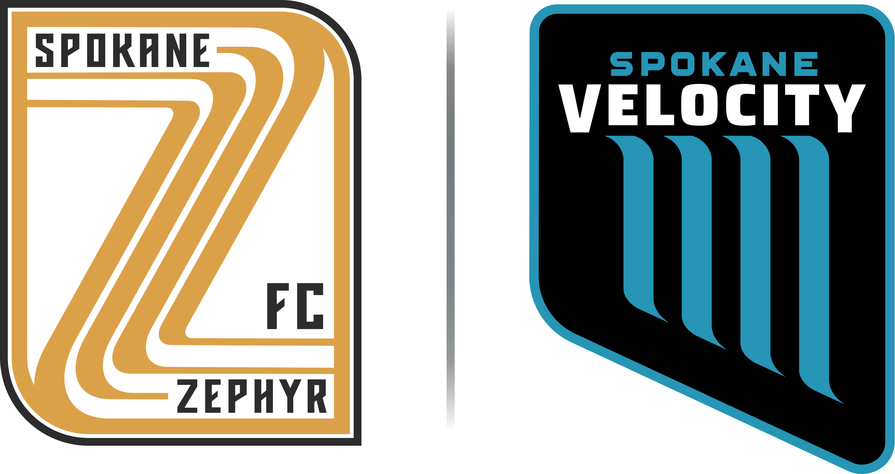

Gonzaga Sport Consulting Group | Spring 2026
Sponsorship Activation Strategies
An executive deliverable hub for USL Spokane: final activation concepts, supporting research, and sponsor-ready pitch materials.
Executive Summary
From sponsor lists to activation platforms.
GSCG evaluated sponsor categories, peer-club examples, attendance behavior, and Spokane-specific fit to recommend activations that are easy to explain, visible on matchday, and measurable after the final whistle.
Activation Strategy
Detailed sponsor concepts with why-fit rationale, build notes, and category filters.
Research ArchiveWeekly Work
Actual DOCX/PDF previews with explanations of what each artifact contributed.
Client MaterialsDeck Library
Final presentation browser and sponsor-specific pitch deck previews.